大明风华
明朝历史交互专题
从洪武开国到甲申国变，276 年山河，16 位帝王。
帝王 · 政治 · 文化 · 烽烟——一部写不尽的王朝长卷。
四大板块
十六帝承续，三百年国祚。从洪武开国到崇祯自缢。
入内详览 →内阁六部、厂卫监察、科举取士——皇权如何运转。
入内详览 →青花瓷、永乐大典、四大名著。衣冠器物与笔墨之间。
入内详览 →九边重镇、海疆倭寇。从土木之变到萨尔浒。
入内详览 →王朝纲要
五个节点，读懂大明兴衰
朱元璋削平群雄，北伐蒙元，建立中国历史上最后一个由汉族建立的大一统王朝。
朱棣在位二十二年，北征蒙古、远航西洋，王朝声威远播，史称「永乐盛世」。
于谦力主固守，率军民赢得北京保卫战，挽大厦于将倾。
一条鞭法整顿财政，却难阻党争、边患与财政危机层层累积。
农民军入京，清军随后入关，276 年国祚自此终结。
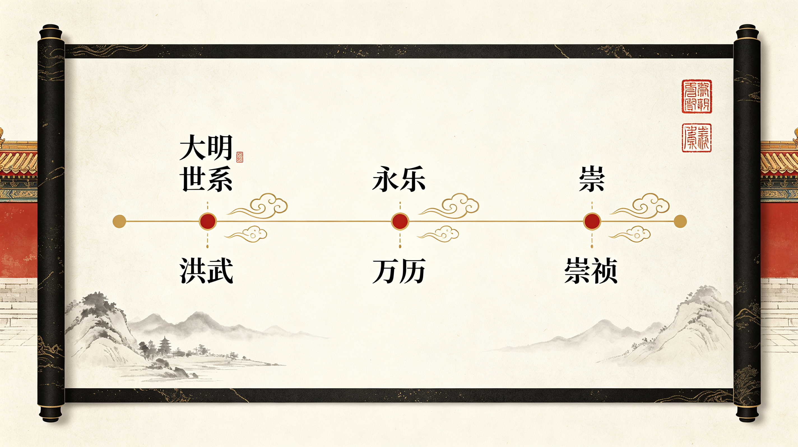
帝王世系
十六帝承续 · 三百年国祚
十六帝总览
明代共历十六帝，自太祖朱元璋始，至思宗朱由检终。玉牒长卷依在位先后排列，印章之朱者即可点击，进入帝王专题。
从童生到状元，四级科举答题进阶，难度逐级而上；与张居正、于谦等真实名臣同朝为臣，结业生成你的「明代功名等级表」。
进入科考 →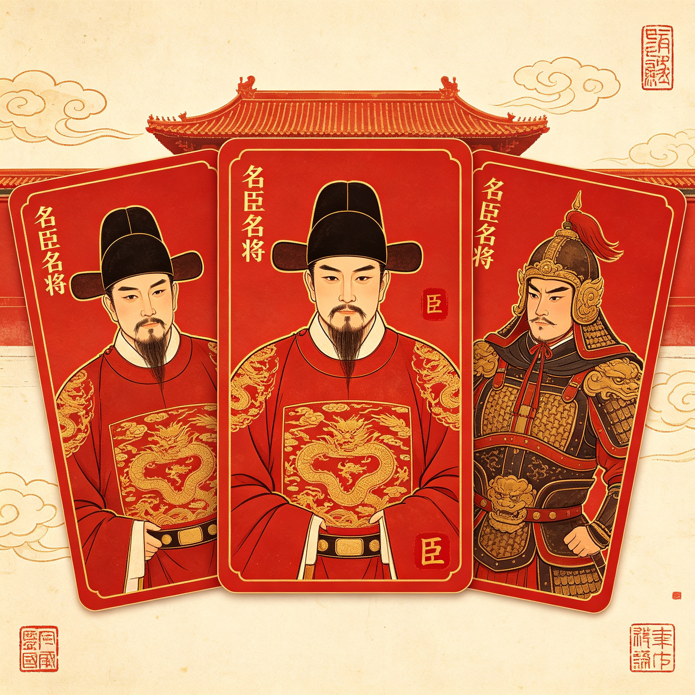
政治制度
皇权中枢 · 官僚体系 · 财政军事
中央行政架构
洪武废丞相后，皇帝直辖六部；内阁票拟、司礼监批红，形成明代独特的中枢运转。
六大制度
从选官到赋税，支撑大明三百年运转的制度骨架
庙堂名臣
制度靠人运转，他们撑起了大明的朝堂
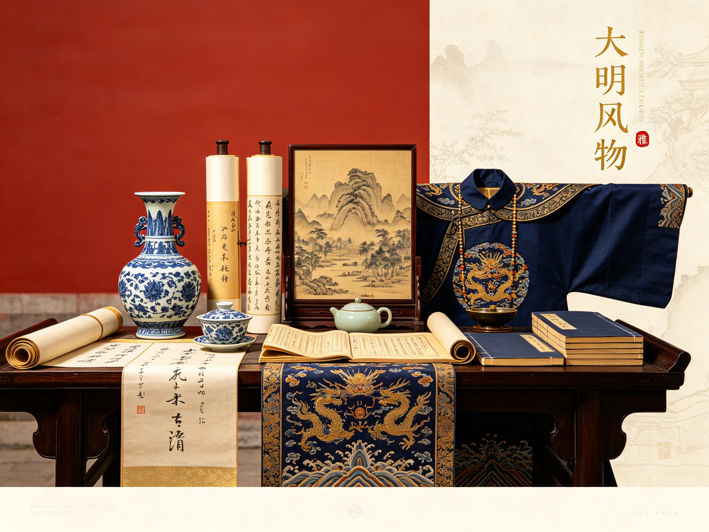
文化风物
衣冠 · 器物 · 文学 · 科技
大明的日常与审美
切换分类，浏览大明三百年的物质与精神世界
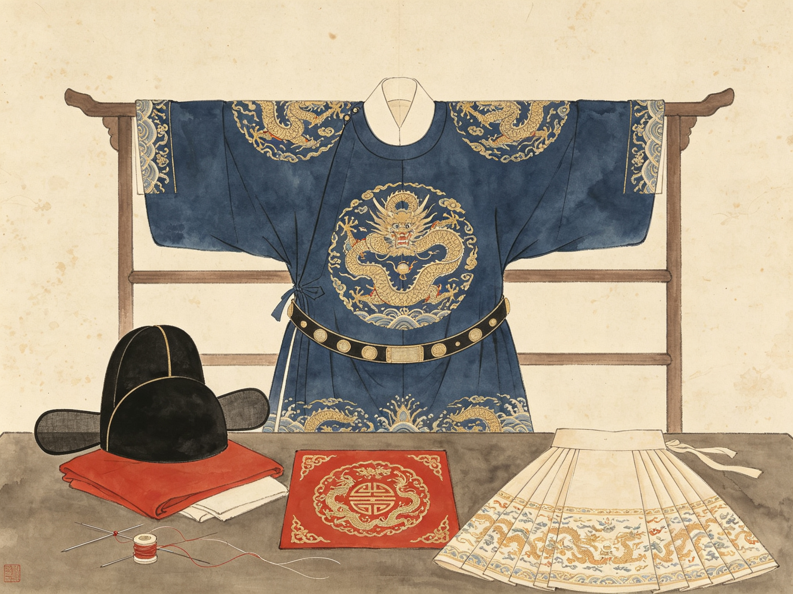
明制服饰等级森严：皇帝龙袍十二章纹，百官按品级佩补子，文禽武兽；乌纱帽、圆领袍、马面裙，皆成后世记忆里的「大明风骨」。
永乐年间营建北京城，紫禁城九重宫阙、中轴对称，红墙黄瓦。至今仍是世界现存规模最大的宫殿建筑群。
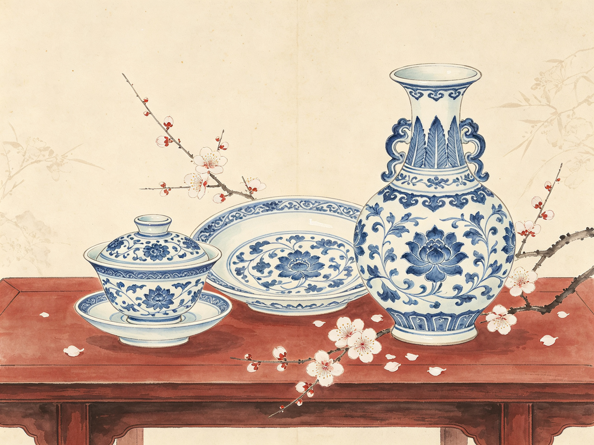
青花瓷在明代走向巅峰：永宣青花浓艳、成化斗彩清雅、嘉靖五彩绚烂。景德镇「天下窑器所聚」，瓷器远销亚非欧。
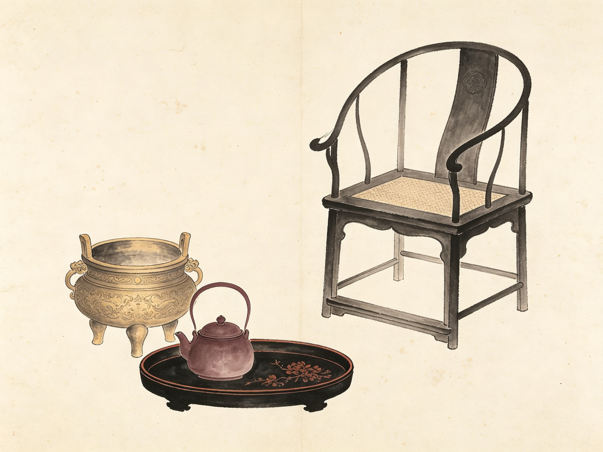
宣德炉铜质精纯、色泽温润；景泰蓝、漆器各擅胜场。明式家具线条简练，被誉为世界家具的巅峰。
《永乐大典》全书逾三亿七千万字，为古代最大的百科全书；《天工开物》《农政全书》集科技之大成。
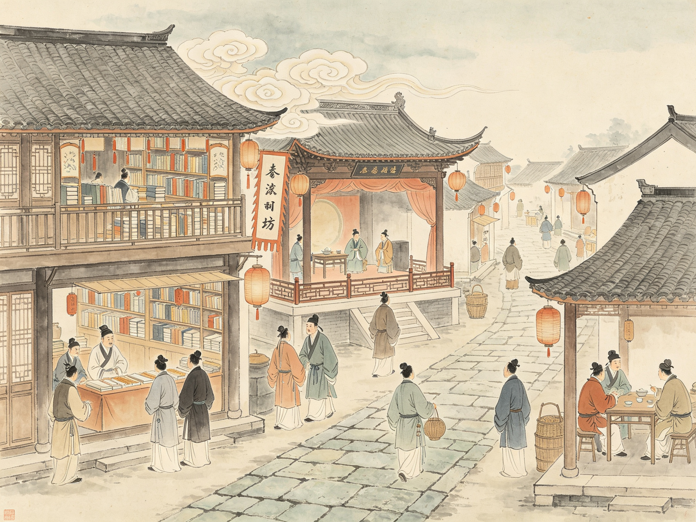
《三国演义》《水浒传》《西游记》相继问世，白话小说走向成熟；汤显祖《牡丹亭》与昆曲盛行，市井文化空前繁荣。
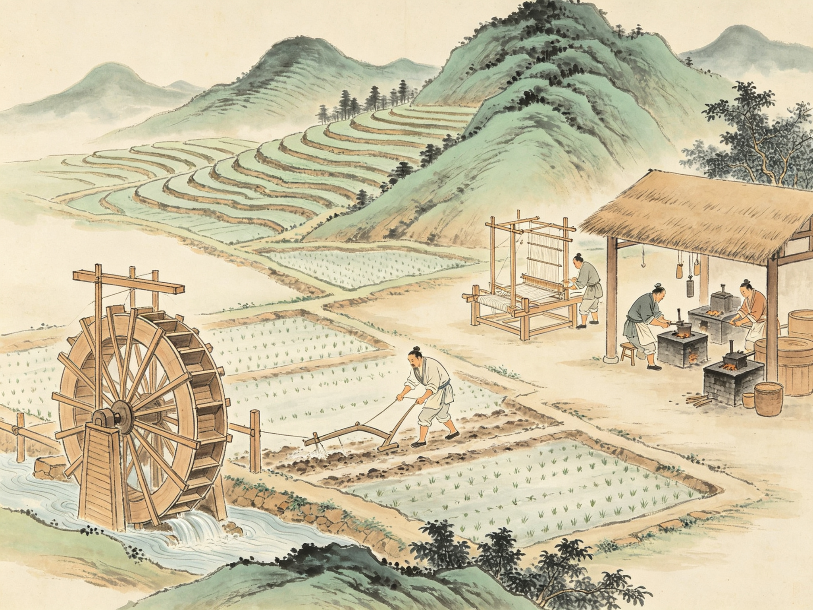
宋应星《天工开物》系统记载农业与手工业生产技术，被誉为「中国 17 世纪的工艺百科全书」。
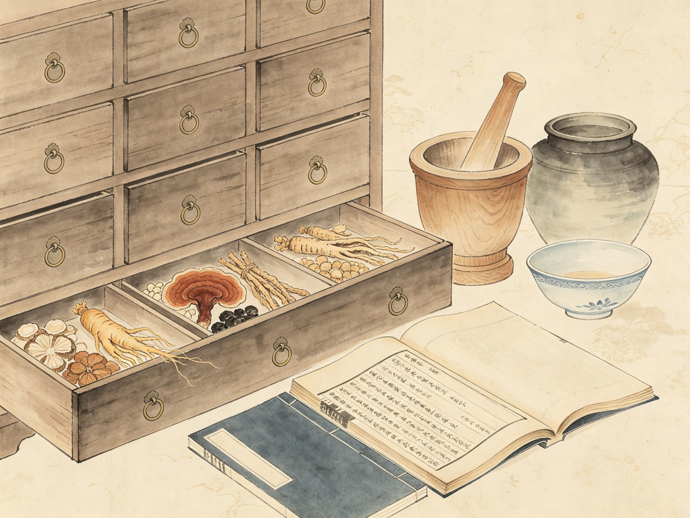
李时珍历时二十七载编成《本草纲目》，收载药物一千八百九十二种，是集大成的药物学巨著。
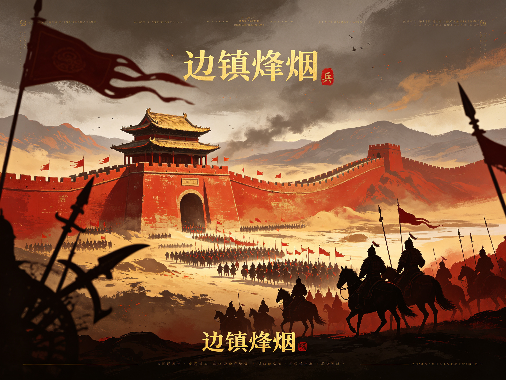
边镇烽烟
九边重镇 · 海疆烽火
战争时间线
点击任意节点，展开该役详情
九边重镇
东起鸭绿江，西抵嘉峪关，九大军事重镇拱卫京师
东起鸭绿江，西抵嘉峪关，绵延六千三百余里。洪武至永乐间逐段修筑边墙、墩台与关隘，构成北方第一道屏障。
九镇之制成于永乐至嘉靖间，后增设昌平、真保二镇，合称「九边十一镇」。各镇设总兵官、副总兵，下辖卫所军户。
卫所军制中后期败坏，军户逃亡日众。嘉靖起戚继光募义乌兵、编练新军，募兵渐成边防主力。
国祚长卷
276 年 · 七个时代 · 五个转折
时代长卷
276 年国祚划分为七个时代，色带宽度与年份成正比（窄屏可左右滑动）
五个转折
左右国祚走向的关键节点
削平群雄、北伐蒙元，终结元朝统治，奠定三百年基业。
此后 28 年间七次远航，明王朝声威远播至印度洋与东非。
英宗被俘、京师震动，北京保卫战保住社稷，王朝由盛转守。
清丈田亩、整顿财政，为垂危的王朝续命十年。
清军随后入关，276 年国祚就此终结。
十六帝图鉴
在位时长 · 数据排行
在位时长排行
条形长度与在位年数成正比 · 万历最长，泰昌不足一月
七下西洋
1405–1433 · 三十余国 · 远至东非
七次远航
自永乐三年至宣德八年，前后历时二十八年
两京十三省
京师 · 南京 · 十三布政使司
两京
成祖迁都后，形成「两京」格局
京师 · 北直隶
今北京、天津与河北大部。成祖迁都后为全国政治中心，「天子守国门」。
南京 · 南直隶
今江苏、安徽与上海。留都所在，仍设南京六部与守备衙门。
十三布政使司
明代省级行政区划，每省设布政使掌民政
山东
治济南府，辖今山东半岛，运河要冲。
山西
治太原府，表里山河，北接边镇。
河南
治开封府，中原腹地，天下粮仓。
陕西
治西安府，含今陕甘宁地区，西北门户。
四川
治成都府，天府之国，土司并存。
湖广
治武昌府，辖今湖北湖南，「湖广熟天下足」。
江西
治南昌府，科举人文之盛甲于天下。
浙江
治杭州府，丝茶之利，海防重地。
福建
治福州府，东南海疆，月港开洋。
广东
治广州府，岭南门户，外贸重镇。
广西
治桂林府，多民族聚居之地。
云南
治昆明府，沐氏世镇，边陲要地。
贵州
治贵阳府，永乐十一年设省，改土归流。
洪武大帝 · 朱元璋
1328–1398 · 明太祖 · 开国皇帝
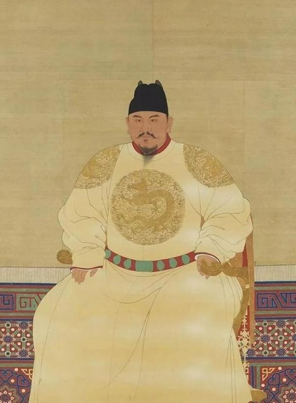
明太祖朱元璋坐像（南薰殿旧藏）
濠州贫农出身，十七岁父母兄嫂相继饿死，入皇觉寺为僧，云游乞食。至正十二年投红巾军郭子兴部，自亲兵起家，灭陈友谅、张士诚，削平群雄。
立国之初天下凋敝，乃移民垦荒、减免赋税、兴修水利、解放奴婢；丈量全国田亩，编定赋役黄册与鱼鳞图册，三十年休养生息，天下渐安。
废中书省与丞相，六部直隶皇帝；设锦衣卫侦缉，重开科举却以八股取士。胡惟庸、蓝玉两案株连数万，开国功臣殆尽。洪武三十一年崩，葬孝陵。
永乐大帝 · 朱棣
1360–1424 · 明成祖 · 迁都北京
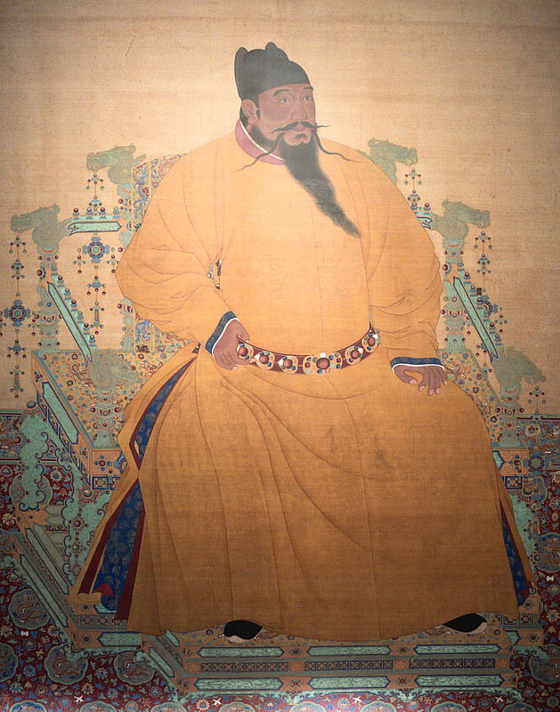
明成祖朱棣坐像（南薰殿旧藏）
太祖第四子，封燕王，镇守北平。建文帝削藩，乃以「清君侧」为名起兵，历时四年攻入南京，建文帝不知所终，遂登帝位。
迁都北京，营建紫禁城，形成「天子守国门」之局；修《永乐大典》汇天下典籍；五次亲征漠北，北元残部益衰，四方宾服。
永乐三年起，遣郑和率庞大船队七下西洋，遍访东南亚、印度洋、阿拉伯直至东非，前后历时近三十年，为世界航海史之壮举。
万历皇帝 · 朱翊钧
1563–1620 · 明神宗 · 在位最久
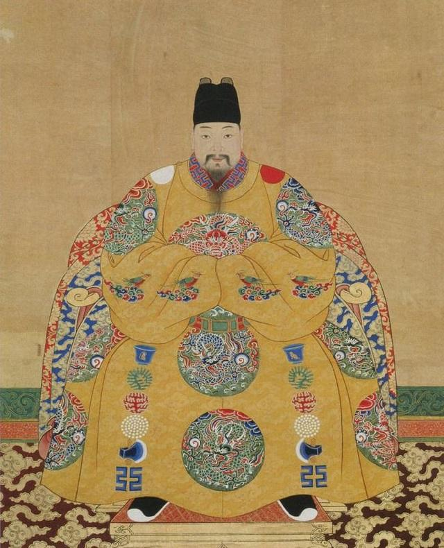
明神宗朱翊钧坐像（南薰殿旧藏）
十岁即位，张居正辅政十年：以考成法整饬吏治，清丈田亩，推行一条鞭法，国库由亏转盈，史称「万历中兴」。
宁夏之役、援朝抗倭、播州之役相继爆发，明军三战皆捷，王朝武功一度复振；其中援朝之战历时七年，耗银数百万。
居正殁后遭清算，此后近三十年不上朝，党争、矿税、边患层层累积。萨尔浒一役明军大败，辽东攻守易势。万历四十八年崩。
末代天子 · 朱由检
1611–1644 · 明思宗 · 煤山遗恨
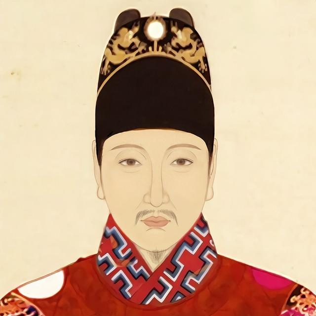
明思宗朱由检像（南薰殿旧藏）
天启七年兄终弟及即位，旋铲除魏忠贤，清算阉党，朝野为之一振，人称「励精图治」。然积弊已深，大厦将倾。
关外后金屡次叩边，关内流寇四起，天灾连年、财政崩溃。刚愎多疑，十七年间更换内阁首辅十九人，竟中反间计冤杀督师袁崇焕。
崇祯十七年三月，李自成率大顺军破北京。十九日，朱由检自缢煤山寿皇亭旁，以发覆面，遗书「朕死无面目见祖宗」。明朝亡。